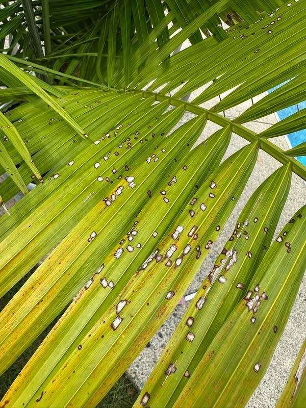
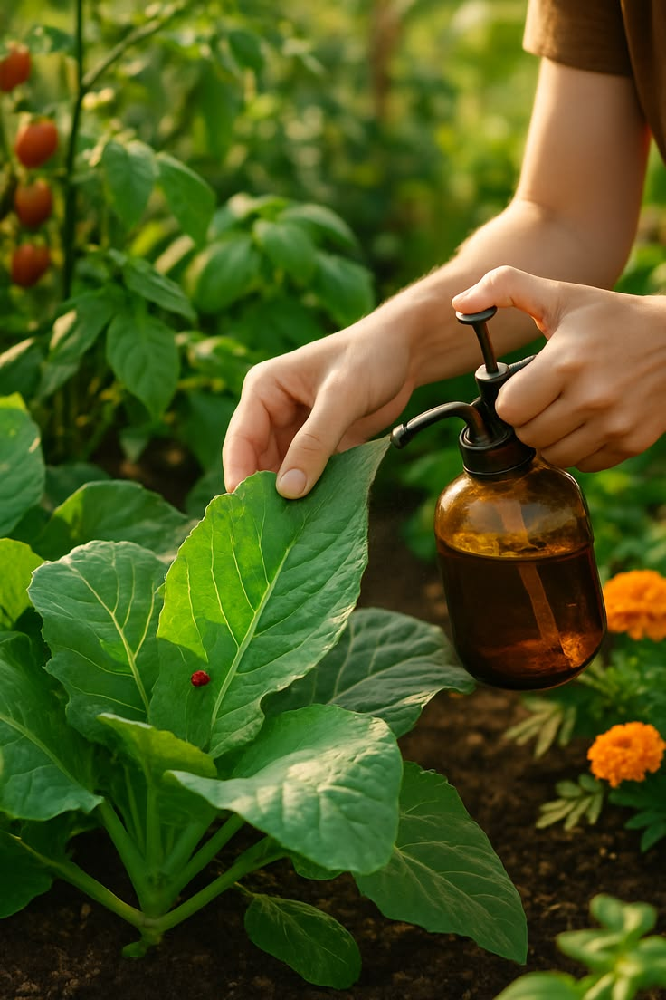
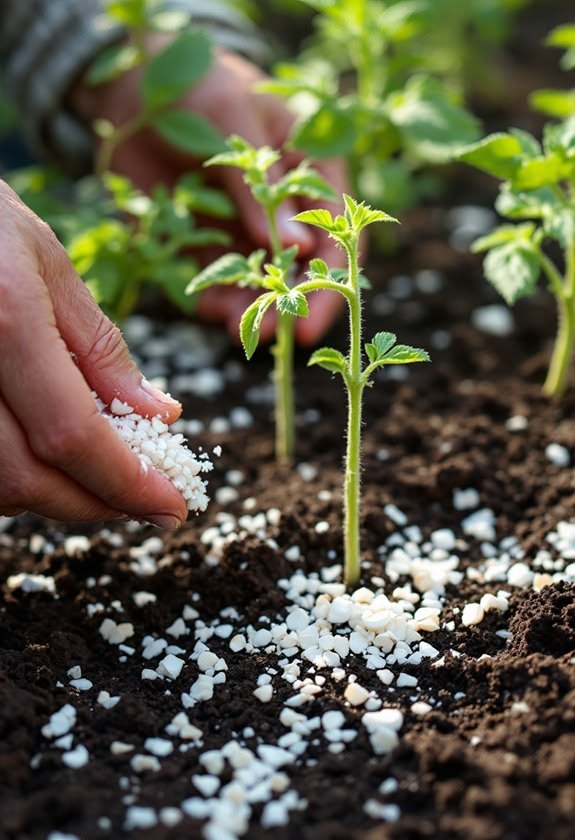

ARTE E FLORES PAISAGISMO
Controle de Pragas
Cuidados para proteger suas plantas e manter seu jardim saudável, bonito e bem cuidado.
SOLICITAR ORÇAMENTONOSSOS CUIDADOS
Proteção para suas plantas.
Identificamos sinais de pragas e problemas que podem prejudicar as plantas, buscando o cuidado adequado para cada situação.
Identificação de pragas
Observação das plantas para identificar sinais de insetos e outros problemas.
Proteção das plantas
Cuidados para reduzir os danos causados por pragas e preservar as plantas.
Avaliação do jardim
Análise das áreas afetadas para entender quais cuidados são necessários.
Cuidados preventivos
Acompanhamento das plantas para ajudar a prevenir novos problemas.
Plantas ornamentais
Cuidados voltados para plantas presentes em jardins e áreas externas.
Manutenção saudável
Orientação e cuidados para manter o jardim em boas condições.
Controle de insetos
Cuidados direcionados para situações envolvendo insetos que prejudicam as plantas.
Áreas verdes
Proteção e cuidado das plantas presentes em jardins e áreas externas.
NOSSO TRABALHO NA PRÁTICA
Cuidar hoje é preservar amanhã.
Um jardim saudável começa com atenção aos sinais e cuidados adequados para cada planta.



Plantas saudáveis
deixam o jardim mais bonito.
Conte com a Arte e Flores Paisagismo para cuidar do seu espaço.
FALE CONOSCO
Suas plantas precisam de cuidados?
Selecione os serviços que você precisa e solicite seu orçamento.